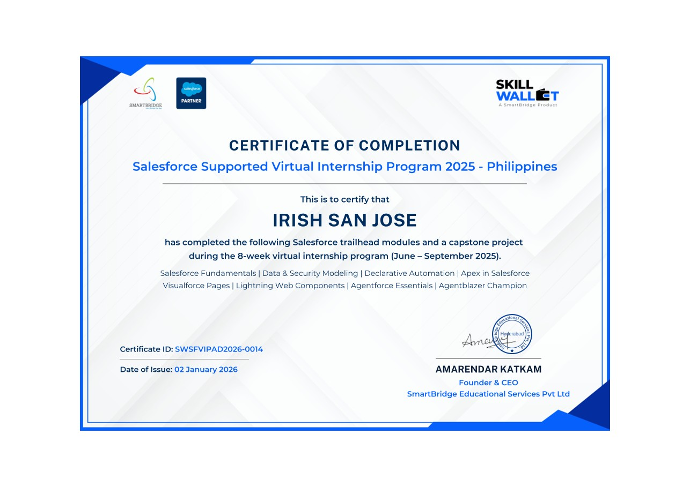
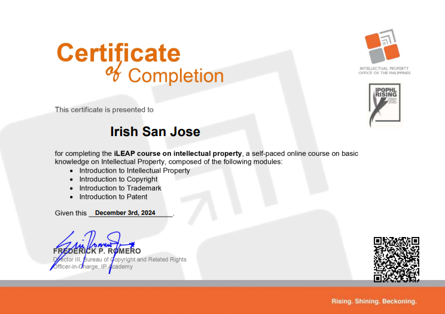
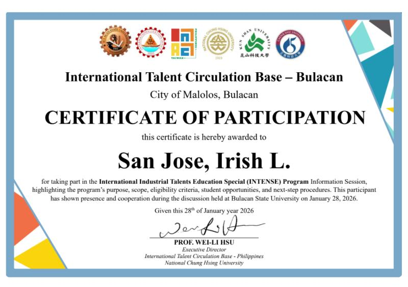
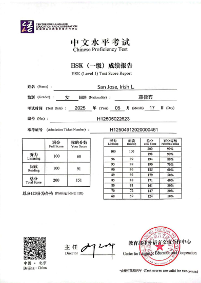
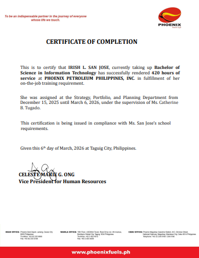

I am an Information Technology student with hands-on experience in data analysis, forecasting, SQL, Python automation, Excel, Google Sheets, and Power BI. I enjoy transforming data into meaningful insights and building practical solutions that support better decision-making.
Used DBeaver and SQL to extract, filter, and analyze business data for reporting tasks.
Automated data processing tasks using Python and Spyder to improve workflow efficiency.
Supported forecasting activities and transformed raw datasets into useful insights.
Data Analyst | BSIT Major in Business Analytics
Learn more about my academic background, experience, and career goals.
I am currently pursuing a Bachelor of Science in Information Technology with a major in Business Analytics. I completed a 420-hour Data Analyst internship at Phoenix Petroleum Philippines, Inc., where I worked on forecasting, SQL-based data extraction, Python automation, and reporting tasks using Excel, Google Sheets, and Power BI. I am passionate about continuous learning and building a career in data analytics and business intelligence.
My technical and professional strengths in analytics, reporting, and data management.
Analyzing trends, organizing datasets, and supporting better decisions through data-driven insights.
Writing queries, extracting records, and managing structured data for analysis and reporting.
Using Python and Spyder to automate repetitive processes, clean data, and improve efficiency.
Creating dashboards, summaries, and reports to present insights in a clear and practical way.
Preparing and organizing raw data to make it accurate, usable, and ready for reporting.
Working effectively with teams, learning quickly, and communicating ideas clearly.
My internship experience and the tools I used in real-world business data tasks.
Phoenix Petroleum Philippines, Inc.
Supported forecasting activities, extracted data using DBeaver and SQL, built automation workflows in Python, and used Excel, Google Sheets, and Power BI for business reporting and analysis. This experience strengthened my technical skills, attention to detail, and understanding of real-world data processes.
SQL DBeaver Python Spyder Power BI ForecastingSelected projects that reflect my academic work, technical skills, and portfolio development.
Developed a web platform that validates MENRO Pandi’s Waste Analysis and Characterization Study using Time Series Analysis and Linear Regression to support data-driven waste management decisions.
A collection of my technical work, portfolio files, and project outputs that demonstrate my growth in analytics, data handling, and development.
Designed and developed a personal portfolio website to present my skills, education, experience, certificates, and featured projects in one professional online space.
Certificates and learning experiences that support my professional growth.
SmartBridge – Credential ID: SWSFVIPAD2026-0014

Intellectual Property Office of the Philippines

International Talent Circulation Base – Bulacan

Center for Language Education and Cooperation

Phoenix Petroleum Philippines, Inc. – 420 Hours Internship Completion

Feel free to connect with me for opportunities, collaborations, or project discussions.
Email: irish.sanjose58@gmail.com
LinkedIn: www.linkedin.com/in/irish-san-jose-452a06277/
GitHub: github.com/databyirish